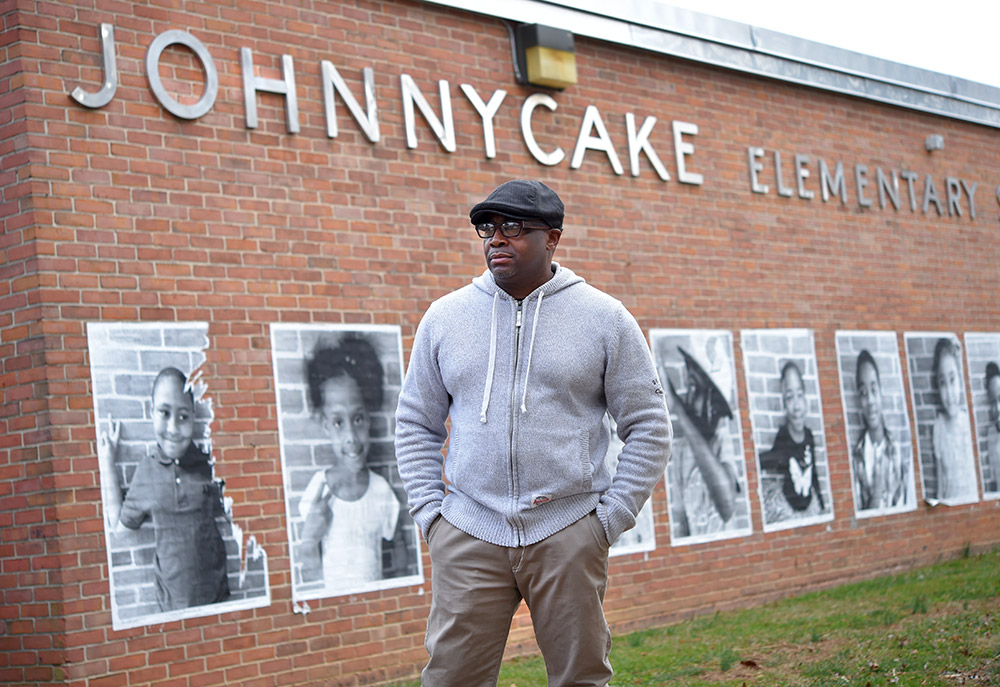
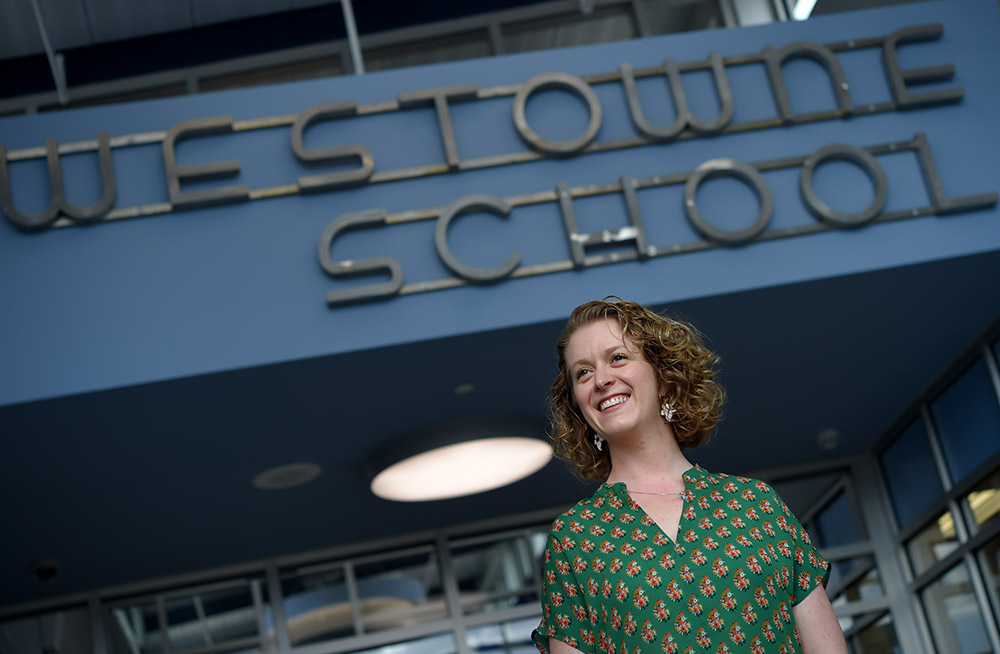

eff Sanford, an African-American father of twin boys, came to the debate at the high school cafeteria with an open mind.
The attendance lines for 11 schools in the Catonsville area had to be redrawn to relieve overcrowding, but there was a chance to achieve something more significant, something that might improve the lives of all children: integration.
Sanford had volunteered to represent Johnnycake Elementary on the boundary committee that would recommend changes to the Baltimore County school board. He knew that in an area where most schools had been segregated for decades, the group might have to confront issues of race and class head on. But as they met for months over the fall of 2015, he was shocked at how quickly the conversation shifted to words that stung: concern about those kids, and how they might affect property values.
They were talking about the children he loved, their friends, his community.
So he bided his time through four meetings. Finally, on a cold night in November 2015, Sanford rose to speak.
He was hurt, but he didn’t yell. He admonished them in almost a gentle tone.
“You are dividing races,” he said. “You’re dividing everyone. That is not what we are here for.
“I am almost ashamed, but it had to be said. Do the right thing. It is about our children.”
People of every race and class live in the southwest county. But many have moved into neighborhoods — and sent their children to schools — with people who look like them.
“It was like, they were fighting to keep what they got, and we were fighting to keep what we got, instead of us fighting to figure out how to make what we had better.”
Jeff Sanford, an African-American father of twin boys at Johnnycake Elementary School
To the south of Route 40 are the predominantly white communities that feed Catonsville, Hillcrest, Westchester and Westowne elementary schools. To the north are the largely black communities that feed Edmondson Heights and Johnnycake elementaries.
At the start of the redistricting process, county schools Superintendent Dallas Dance looked at the map and saw a rare opportunity: to better integrate students of different races and classes.
“When you have a diverse school population, all students thrive,” Dance said, adding that not just low-income, students of color benefit, but also affluent students. “When you have integrated schools, students have the opportunity to push each other.”
Dance and some other educators are now looking back to the successes that followed the Supreme Court’s 1954 order that forced schools to desegregate. In the 1970s and 1980s, when schools were the most integrated they would be, black students made stunning gains in national tests in reading and math. In some subjects, they cut the so-called achievement gap with white students in half — and white achievement did not suffer.
But after a backlash against forced busing in the 1970s, the courts backed away from requiring districts to integrate. In 2007, the Supreme Court struck down even voluntary school desegregation plans, making it illegal for schools to assign students based solely on race.
Schools have gradually resegregated, and progress in closing the achievement gap has mostly stalled.
Caption goes here
Efforts to shrink it — by setting higher standards, imposing more testing, holding teachers more accountable — have mostly failed.
By 2014, even as the state’s population grew more diverse, more than one quarter of its public schools were highly segregated, according to the Maryland Equity Project at the University of Maryland.
In those segregated schools, researchers say, students will often find themselves with less-experienced teachers in less-rigorous classes — and more likely to lag behind their peers.
School districts still have tools they can use to integrate: creating magnet programs and charter schools, redrawing school boundary lines.
But in Baltimore County, where parents buy houses based on where they want their children to go to school, redrawing those boundaries exposed fault lines between communities.
“It was like, they were fighting to keep what they got, and we were fighting to keep what we got,” Sanford said, “instead of us fighting to figure out how to make what we had better.”
About this series
At a time when Maryland's population is growing more diverse, the schools are becoming more segregated. With a grant from the Education Writers Association, Baltimore Sun reporters Liz Bowie and Erica L. Green examined local attempts to better integrate schools by race and class. Along with photographer Lloyd Fox, they interviewed students, teachers, parents and researchers. The Sun also commissioned an analysis from the Maryland Equity Project at the University of Maryland to create a database that breaks down every public school's racial and socioeconomic makeup.
Produced with support from:
Booming population
In Baltimore County, the emotionally charged exercise of redistricting will be repeated in the coming years, as a booming population has forced a massive building plan. Since 2011, when the total enrollment was roughly 105,000, about a thousand new students have been added each year. Officials plan to spend $1.3 billion for 15 new buildings, and renovations and additions to many deteriorating facilities.
Decisions about which schools get renovated or replaced involve a complex mix of factors, including the conditions of the buildings, anticipated growth, and to a certain extent, campaigning by parents and politicians. Many of the changes require new school boundaries.
While some districts rely on school administrators to draw the new lines, many others, including Baltimore County, use volunteers from the community. The county’s policy calls for a committee made of teams of three or four people from each of the schools affected.
Led by a consultant, Matthew Cropper, the group was to scrutinize the map and divvy up blocks, streets and houses among the schools. Cropper, who was paid ... by the school system to be a disinterested third party, stuck to a tightly controlled format during the meetings that many said left little time for a full discussion.
The board directed the committee to give preference to solutions that left communities intact and allowed children to walk to school. Members were also to consider diversity of the students.
One in five Baltimore County schools was highly segregated in 2014, according to the Maryland Equity Project. The percentage of such schools has grown over the past three decades.
Some districts make diversity a priority when redrawing school boundary lines, but they are in the minority. The Century Foundation, a progressive think tank based in New York, counted 50 such districts out of more than 13,500 nationwide. They include Montgomery County.
The Baltimore County school board did not prioritize integration over other factors. And Dance says he feared he could be fired if he pushed too hard.
But the current school board chair said members realized its significance.
The current school board chair believes that the board and the superintendent have always placed emphasis on ensuring that resources were evenly spread among schools.
“This board has had equity as a primary platform in our decision making process,” Edward Gilliss said. “I like to think that equity lens has carried through on these redistricting processes.”
He said the board created a transparent process with substantial community input.
Two sides of Route 40
The night Sanford stood up to speak, the tensions in the cafeteria reflected the clashing perspectives of parents on either side of Route 40.
North of the highway were Johnnycake and Edmondson Heights elementary schools, with largely minority students from low-income families. Neither was scheduled to get a new building, but both were in need of work.
Johnnycake was 85 percent black and Hispanic. Three-quarters of its students received free or reduced-price lunches. Only a quarter of its fifth graders were passing English and math tests.
The school had 105 more students than it had room for. Children learned in six trailers lined up next to the main building. Special education students met in a former supply room. Students attended math class in the cafeteria.
Caption goes hereOPEN GALLERY
Sanford believed the portable classrooms were a safety risk and an eyesore in a community where he and others paid property taxes for their well-maintained, single-family homes.
He and other Johnnycake parents began the redistricting process thinking about how to improve student-teacher ratios and get the children out of the trailers and back into the main school building.
On the south side of Route 40 in Catonsville were four aging, crowded schools made up of predominantly white families, whose PTAs had come together for years to fight for renovations and more space. These parents from Westchester, Hillcrest, Westowne and Catonsville elementaries had in many cases paid a premium for their houses so they could ensure their children were in the some of the best schools in the county.
Hillcrest, for example, is 68 percent white. A quarter of its students received subsidized lunch. About half of fifth graders passed the English tests. Fifty-nine percent passed math.
Hillcrest parents, led by James Kitchel, loved that they could walk their children to school in a closely knit community. Construction had already begun on the new Catonsville and Westowne schools, and parents saw the redistricting process as the final step in their winning battle before they moved into the new buildings the next year.
They did not think that when they walked into the cafeteria at Catonsville High on a hot September night that they would be confronted with parents from 11 other schools. They thought it would just be them redrawing a few lines. Integration wasn’t what they had fought for, or thought about.
September: Maps revealed
When the consultant presented options for the new boundary lines in September, it didn’t take long for feelings to get raw.
Video of the meetings was posted on a website. Parents and others could comment on the site’s public email forum, where they could be read by anyone. Those emails — in the end, the printout totaled 145 pages — quickly became a barometer of the parents’ feelings.
By the end of September, proposals that moved students from more affluent, white neighborhoods north across Route 40 and into Johnnycake and Edmondson Heights caused a storm of protest.
“You are potentially causing our property values in Academy Heights to plummet!” one parent wrote in an email. “This is unacceptable Baltimore County ... Are you punishing Westowne families for wanting a better school? You should be ashamed of yourselves ... Keep Catonsville in Catonsville. Bring affluent families to Westowne.”
Another parent wrote: “If my child has to cross Route 40 to attend school next year, she will be going to a private school. ...The parents at Westowne have worked hard over the last few years to improve the environment of our school and to have to give that up to attend a lower ranking school is unacceptable.”
The retorts from the parents on the other side of Route 40 poured in.
“Wow! Hope my Ed Heights child doesn't ruin yours,” one mother wrote. “How exactly do you quantify a "lower standard of education"? Perhaps the almighty rating will rise if more involved parents became a part of the school community, but the "Catonsville" parents need to stop talking about this issue as if we are some disease to be avoided.”
Johnnycake parents didn’t expect that reaction from a community that they knew as warm and friendly at the Farmer's Market, the annual holiday parade and the tree lighting ceremony.
Sanford was disturbed. He saw the language, looked at his 11-year old twin sons and thought how little had changed since Jim Crow.
“Is this what they have to deal with?” he thought. “This ain’t the 40s and 50s.”
From the moment the consultant, Cropper, presented the oversized maps outlining options, Sanford said, it became clear that working for the good of all children wasn’t the primary goal.
Economic and racial composition of Maryland public schools
Maryland is an economically and racially diverse state. However, that diversity is not always reflected in the composition of school districts. In fact, 28% of Maryland schools are considered "racially-isolated" (consisting of more than 90% of a single race). Similarly, 23% of Maryland schools have student populations with higher than 75% low income students.
Minority student population
0%
100%
Free & reduced lunch students
0%
100%
Source: U.S. Department of Education, National Center for Education Statistics, Common Core of Data. Data analysis by the Maryland Equity Project, College of Education, University of Maryland.
“Everybody started picking spots on the map,” he said. “And they were like, ‘We're going to defend this spot.’”
Sanford noticed that parents at some schools, such as Johnnycake, kept to themselves, and other schools were joining together to get what they wanted. He said they played numbers games, to make sure that schools were full enough with families from certain neighborhoods that they didn’t have to take others.
“I felt as though we didn’t live on that side of Catonsville,” he said. “So they didn’t want us on that side of Catonsville.”
Everyone knew what he meant. Route 40, a U.S. highway that runs from east to west across Maryland, had long divided the county. During the Civil Rights movement, Freedom Riders marched along the thoroughfare to protest hotels and other businesses that refused to serve blacks.
Today, houses south of Route 40 in the Catonsville area sell for tens of thousands of dollars more than homes north of Route 40. And the code phrase for those who are open is that they are the kind of people who will cross Route 40 to go shopping and eat out.
At one meeting, a white man urged others to think beyond the road as a racial dividing line.
“There is overcrowding above Route 40, and we have to address it,” he said. “It is a road. It is not a wall.
“We have to have a conversation.”
Power of integration
Dance, the superintendent, knew that integrating the schools would be tough. Growing up, he’d attended largely segregated schools in Richmond, Va. He wanted better for the 112,000 students in the school system he was leading. He believed that all children benefited when they were in classes that reflected a range of races, cultures, and socio-economic backgrounds.
He felt he had no true power to force integration, and no mandate from his bosses on the school board to do so. But he was hoping he could encourage it. He knew of its power to change lives, proved in a stack of research.
That research included a study of students in Montgomery County. schools in Montgomery County.
The 2010 study tracked students in public housing after their families were randomly assigned to higher income neighborhoods through a housing voucher. Five to seven years later, those students significantly outperformed their peers, who had been left behind in public housing.
By the end of elementary school, the children who had moved out had already cut their achievement gap in half in math and by a third in reading.
Particularly striking was that the county was pouring additional money into its highest poverty schools at the time, but integration had a greater impact on student achievement than the extra resources.
Another decades-long research study published in 2015 by Rucker C. Johnson of UC-Berkeley showed blacks who attended desegregated schools were less likely to go to jail, more likely to graduate and more likely to pursue higher education. The researchers found that integration also had long-term effects on subsequent generations, making it more likely that their children would graduate from college, get good jobs and be healthier.
With integration, achievement gap shrinks
Researchers believe bringing students of different races together will help close the achievement gap. As American schools began to desegregate under court orders in the 1970s and 1980s, black achievement rose dramatically. Results from the National Assessment of Educational Progress, given to a sampling of students in reading and math every few years, show the gap between black and white achievement was smallest when schools were most integrated, in the 1980s. As schools began to resegregate the achievement of black students dropped, then rose slowly. The gap has not closed.
Average reading score for 17-year olds
Average math score for 17-year olds
Researchers and educators say the effect of integration isn’t magic. Rather, they believe that middle-class parents bring resources and social capital to the schools. By advocating for smaller class size and more rigorous academics for their own children, they can help improve conditions for all children.
There is also evidence that all children - including white children - gain from learning in a setting with children of different races and backgrounds.
“They benefit socially and emotionally being around diverse populations,” Dance said. “They understand how to communicate. They understand how to collaborate more.”
Changing demographics
Parents were debating school boundary lines as the county population was not only growing, but becoming more diverse. Twenty-five years ago, Baltimore County was 77 percent white. Today, it’s 43 percent white.
Still, segregation persists. In 1990, only one in 10 county schools had a student body that was more than half minority. The proportion has tripled to about one in three today, according to the Maryland Equity Project analysis.
The typical white student in Baltimore County attends a school that is mostly white. The typical black student attends a school that is mostly black.
Students from low-income familes are similarly segregated from students from wealthy families.
As the income gap in the country grows, researchers say, the achievement gap between poor and affluent students is also widening — and more rapidly than the gap between black and white students.
Dance, the superintendent, believes integration could boost black achievement for less money than is currently being spent. The federal government sends roughly $40 million in Title 1 funds to Baltimore County to help the poorest, most segregated schools. He doesn’t believe as much money would be needed if schools were better integrated.
October: A Voice for Integration
Halfway through the redistricting process, Cara Detwiler, a white teacher at Johnnycake, saw that none of the options relieved her school’s overcrowding. Alternatives that would have moved Johnnycake students south to largely white schools below Route 40 had been rejected, as had options that would have brought other students north.
At the committee’s October meeting, the 5th-grade teacher took the microphone.
Caption goes here
“No one is talking about the fact that there is no diversity change north,” she said, adding that the school would remain 94 percent minority.
Detwiler, a native of Catonsville, didn’t expect enthusiasm for integration, but she hoped parents and teachers on the boundary committee might at least have a conversation about it. As a white teacher, she was aware that she was in a unique position to force such a discussion.
“It was easier for me than it would have been if I was black,” Detwiler said. “I didn’t have to worry about being the angry, black woman. Instead, I was just the naggy white woman. And that’s different.”
The stigma north of 40
For years, the “Title 1” label — stamped on schools with predominantly poor students — hung over Johnnycake like “a black cloud,” Principal Bre-Anne Fortkamp said. It carried the same stigma as the words “inner city,” a place stereotyped as poor, chaotic — inferior.
Fortkamp, who is white, knew that the test scores at her school were lower than those at schools on the other side of Route 40. But she had attended some of the best schools in the Baltimore County herself — Riderwood Elementary, Dumbarton Middle and Towson High School — and had tested horribly. She believed that “kids are not test scores.”
As a principal, she took pride in other numbers — such as the more than 95 percent of families who responded on end-of-year surveys that they felt welcomed at the school and believed their children were getting a good education.
As much as they didn’t want to believe it, parents and staff who represented Johnnycake in the redistricting discussions had no doubt that their school was confronting racism.
“All the same reasons people are afraid to go into neighborhoods were the same reasons people didn’t want Johnnycake,” Fortkamp said. “And it was very black and white.”
The Johnnycake children did have struggles. Some had lost family members to violence. Some had to wake up early to feed younger siblings and were cranky for lack of sleep.
But Gary Budd, a fourth grade teacher, said that as a white man in his 30’s, he could relate.
“These are good kids who might have had some rough times in their lives,” he said. “We all have a common denominator: life.”
That was most clear to Sanford, who felt he had much in common with the parents from south of 40 who wanted their children to have the best educational advantages. He moved to his neighborhood for a better life, and Johnnycake was a part of that. He believed his twin boys had received an excellent education there, which had helped them gain admission into a competitive middle school.

Caption goes here
He felt he played as much a role in his children’s education as their teachers. There were homework checks every day, pop quizzes ahead of vocabulary tests, and his children weren’t allowed to bring home Cs.
He could have spent more money on a bigger house on the other side of 40, he said, but he chose his smaller, ranch-style home so it’d be easy to take care of when he got older.
He had his sons’ academic careers planned out, all the way through college.
“I want them to do better than me,” he said. “I tell my sons, ‘I expect nothing but greatness from you.’
“I think anybody who loves and cares about their kids holds them to that standard.”
Yet now he stood listening to other parents, and what he heard them saying was that he wasn’t good enough, that his standards for his children were inferior.
“All they saw was a black man whose kids go to Johnnycake,” he said. “They thought, ‘You’re black, I’m white, I can do things you can’t do.’ Maybe — but your kids can’t do things my kids can. I would put my two kids up against anybody on that side of 40.”
Sanford felt it as a blow to his entire community. The redistricting process had shown Sanford and his fellow parents that their children — the ones they saw as smart and full of potential — were seen only as liabilities.
South of 40: Meeting at Matthew’s
Meanwhile, parents and faculty at the Catonsville schools south of Route 40 were feeling frustrated that the tightly controlled committee meetings didn’t allow for discussion or horse-trading. So Kitchel, the Hillcrest father, and parents from other white schools, who had been meeting years before the redistricting process, decided to get together independently.
One night they went to Matthew’s 1600, a local restaurant, to try to hammer out a compromise among themselves over their shared boundary lines.
When the consultant found out, he shut them down. He said he didn’t want them to work outside of the committee.
Most of the white, middle class families who spoke out at the meetings and online said they didn’t want their children to have to cross the busy, dangerous Route 40 to go to school.
They said they didn’t intend to hurt the people on the other side of the highway.
For them, it wasn’t about race, or even class. Instead, they said they wanted to protect the high standards of their schools and give their children the best chance for a good education.
They offered to embrace some of Johnnycake’s students, as long as the balance of their schools did not shift so that the majority were students of color or low income. And some research suggests that once a school has more than 40 percent of its students living in poverty, achievement starts to drop off.
Caption goes here
“Honestly, it is hard to hold it against parents,” said Erica Mah, an Asian-American Hillcrest parent and teacher. “They are looking at what is going to happen to my child, and not the greater good.”
Parents said they feared their children’s education would suffer if students weren’t being pushed to perform at the highest levels.
The parents’ worries were not baseless. The highest-performing schools are usually those with the wealthiest families. The percentage of Hillcrest fifth graders who passed state standardized tests in 2016 in English and math was double that at Johnnycake.
Other parents worried the poor, black children might carry their struggles with them into the schools.
Parents at Westowne saw their school as the model for integration. About half of its students were black and Latino, and 46 percent qualified for a free or reduced-price meal. But when the idea of moving half of Westowne’s students out was floated as an option, parents fought back.
PTA president Justine Stull, who is white, had moved to her neighborhood IN PART because she believed her children would benefit from the diversity. But she worried that adding more minority children could burden her children’s classrooms with students who needed extra help.
“There is an overlap between race, poverty and childhood trauma,” she said. “They have learning issues that lead to behavioral struggles, behavioral needs.”
As teachers tended to those needs, she said, she believed it would be harder for her kids to excel.
“We don’t want to talk about these things,” Stull said. “They are too hard.”

Caption goes here
Race wasn’t the only issue. Class divisions emerged as well. Kitchel, who had long advocated for solutions to overcrowding at Hillcrest, had collaborated with parents from the other Catonsville-area schools — Westchester, Westowne and Catonsville — for years. But now they were fighting about how many students Hillcrest would unload to the others.
A vocal group of parents didn’t want their children to go to Catonsville Elementary School because they worried it could set them on a path to Arbutus Middle School. Arbutus is largely white, but it is poorer than Catonsville, and the parents didn’t want their children to be in a school with a large low-income population.
With all the disagreement among the four Catonsville schools, Kitchel felt that bringing in the other schools was just confusing the process.
“You had way too many schools involved chasing too few new seats involved,” he said. The new schools just couldn’t take that many students from Johnnycake before they would be overcrowded again.
Donna Knutson, a black Hillcrest parent, said most parents were going to buy a house in the best neighborhood they could.
Still, she said, “You can put it as a financial issue so you don’t have to talk about it as a racial issue and a social issue. It is a really good argument to disguise other issues.”
At a certain point in the process, she said, it became clear that the parents were not going to discuss diversity. She said everyone retreated to their safe places.
“It was every man for himself.”
Mid-November: A chance for integration
In November, the consultant presented a new option. It would have integrated the schools, but it was a radical redrawing of all of the boundaries. Where earlier proposals would have required a few hundred students to change schools, the new plan, known as Option J, would have moved 2,100.
Given the large number of students that would have been affected, it was clearly just a theoretical exercise. It was quickly voted down.
But teacher Detwiler, upset that they’d never discussed diversity, didn’t let the moment go.
“It is a real disappointment that we weren’t brave enough to have the conversation about this earlier,” she told fellow committee members. “Wouldn’t it have been important to have gone to public discussion, so that people couldn’t hide behind property values as the reason why they don’t want really integrate their schools?”
There was no response.
This was the meeting in which Sanford stood up to admonish parents about their language. He said he believed all the parents were in the room for their children, but that no one was thinking of the community as a whole.
He got applause, but neither his nor Detwiler’s words would affect the outcome.
After the meeting, Detwiler sat in her car and cried.
Caption goes here
“I was just so frustrated,” she said later. She was angry that the wider world would so easily dismiss the Johnnycake students — kids she knew had big plans and goals.
“They have some inkling that there are things working against them,” she said. “But they don’t know how deeply set that is.”
A week later: Telling the Kids
Detwiler decided to tell her fifth graders about the redistricting process. She showed them an online survey designed to solicit final input on the new boundary maps for Catonsville.
The 10 and 11-year-olds knew their school needed more space. They spoke of how the cafeteria line was too long, and their art teacher needed her own classroom.
She told them that there had been a process that would have helped with those issues, but that some people didn’t want their kids to come to Johnnycake, or Johnnycake kids to go to their schools. She explained that people didn’t want their kids to travel farther to a school that was rated lower than the one they went to now.
She was referring to Greatschools.com, a website with school reviews and rankings that is widely consulted by parents and real estate agents. The site had rated Johnnycake a 3 out of 10.
The kids were indignant. They could not understand how their hard work — the musicals, the after-school clubs, their essays and research — added up to a 3.
Detwiler said one 5th grader stopped the discussion to explain what the issue was.
“No,” he said. “It’s because we’re black.”
Early December: Johnnycake pulls out
Johnnycake school leaders agreed that any students they sent to Hillcrest would have received a good education.
But they were more worried about whether their kids, who were used to being greeted with a hug everyday at Johnnycake, would feel welcome at a less diverse schools south of 40.
They were offered an option in which 50 of Johnnycake’s XXX children would move to a mostly white school. But with such a small number, parents said, their children would just be tokens. They rejected it.
In December, the Johnnycake representatives pulled their school out of the process.
Looking back, the Johnnycake principal said, she was naive about the opposition that the idea of integration would spark.
“I was not prepared for that,” Fortkamp said. “Maybe, shame on me. As a parent, I understand that they felt they had their child’s best interest. I just didn’t think it would get so ugly.
“We decided we’d rather stay overcrowded — and have them be loved.”
Hard Decisions
Detwiler kept thinking someone would step in to help make things right: that Dance would get involved, or the school district’s Office of Equity and Cultural Proficiency.
Detwiler kept thinking someone would step in to help make things right: that Dance would get involved, or the school district’s Office of Equity and Cultural Proficiency.
Dance said that if he had tried to force integration, the school board would have fired him. The work had to come from the parents and community.
Caption goes here
“What I have to remind myself is that the problem didn’t happen overnight and without some type of transformational change, it is not going to change overnight either,” Dance said. “If you want something drastic to happen now, it is going to take court action. There is not enough political will to do it.”
School districts that have voluntarily integrated their schools have done so, Dance said, when a county government or school board set a new policy that explicitly called for increasing diversity, and then set up a strategy to carry it out. Baltimore County has never taken that step because no political pressure has been put on leaders to do so.
Integration wasn’t even on the school board’s agenda. “I don’t believe the board aggressively considered making schools more diverse as a significant factor in the final outcome,” said Michael Collins, a board member during the redistricting process.
Collins doesn’t remember a single discussion about integration in his five and a half years on the board. Instead, The board didn’t see integration as an objective because they believed their schools already offered equal access to good teachers and curriculum.
Collins doesn’t believe Dance would ever have been fired if he forced the issue. “We might have said Dallas this is not going to work, but we wouldn’t have said go find another job,” Collins said.
Hillcrest parent Donna Knutson said forced integration would have led people to sell houses and move, just as in the desegregation period decades ago. She and other parents thought more could have been done to make integration work. But they believed it needed to be a separate conversation.
Join the conversation
As a follow-up to the series, The Sun, Maryland Humanities Council and Loyola University of Maryland's Center for Innovation in Urban Education will be hosting a community dialogue about the path forward for school integration.
The forum will be held Wednesday, March 29 from 6:30 - 8 p.m. at Loyola University. For more information and to RSVP go to www.loyola.edu/join-us/bridging-divide.
The forum is funded through a grant from the Education Writers Association.
Preston Smith, a Kansas City demographer who helps districts redraw school boundaries, said a growing number of school boards is taking control of the process back from the community. They are drafting the lines themselves, and then asking for community input.
Nicholas Stewart, the school board member who represented the southwest county, suggested the board could change the charge to the boundary committees. Rather than being told to “maintain” diversity, he said, volunteers could be told to “increase” it.
Sanford, of Johnnycake, thinks the adults missed something.
During the meetings, when adults were inside the cafeteria debating, their children — kids of different races and economic backgrounds, kids who didn’t know each other — were playing together outside. His sons had so much fun, he said, that they asked to go to every meeting, so they could keep playing with the kids from Catonsville and other schools south of 40.
“Our kids good enough to play together, but they can’t learn together?” Sanford said. “We can’t see what they see.”
March 2016: The final vote
The committee settled on a plan. They would move 346 of the 5,900 students. By the time the new boundaries are phased in, Hillcrest will have moved 87 students to Westchester and Catonsville schools.
The plan didn’t move enough students to solve the problem of overcrowding at Hillcrest or Johnnycake. Meanwhile, a beautiful new building, Catonsville Elementary, still has space, as does Westchester.
The Baltimore County school board took up the recommendation in March, six months after the committee began meeting.
The vote was unanimous: The board approved the plan. The racial and socioeconomic makeup of the 11 schools changed little.
There was little mention of Johnnycake, and none of integration.